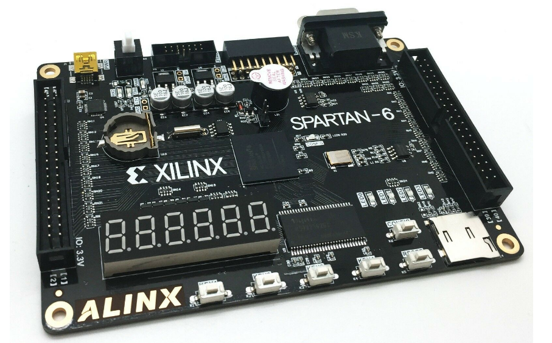

MIPS微系统设计方案
设计概述
本文设计的是由Verilog实现的MIPS微系统，该微系统支持45条MIPS汇编指令（不含乘除指令），支持系统中断，最终实现在FPGA（可编程逻辑门阵列）上的系统验证。

为了实现该功能，我们需要对P7工程代码进行一定修改，包括删除乘除指令模块和系统任务使其可综合、增加Tube、UART、GPIO等外设驱动模块、对系统桥Bridge进行调整等等。

实现指令说明
我们将本CPU实现的指令分为以下几类：
-
calc_R: add,sub,addu, subu, and, or, nor, xor, slt, sltu
-
calc_I: addi,addiu, andi, ori, xori, slti, sltiu
-
shift: sll, sra, srl
-
shiftv: sllv, srav, srlv
-
load: lw, lh, lhu, lb, lbu
-
store: sw, sh, sb
-
B类：beq,bne,bgtz,blez,bgez,bltz
-
J类：j, jal, jr, jalr
-
特殊：lui
-
CP0相关指令：mfc0，mtc0
-
异常中断返回： eret
工程模块定义
该部分我们仅介绍与P7不同的模块——Bridge，Tube，UART，GPIO
fpga_top（顶层模块）
该模块替代P7中的mips模块，增加了和外设（数码管、LED等等）通信的IO接口。
| 信号名 | 方向 | 位宽 | 描述 |
|---|---|---|---|
| clk_in | I | 1 | 时钟信号 |
| sys_rstn | I | 1 | 低电平同步复位信号 |
| dip_swithc0 | I | 8 | 第0组拨码开关控制信号 |
| dip_swithc1 | I | 8 | 第1组拨码开关控制信号 |
| dip_swithc2 | I | 8 | 第2组拨码开关控制信号 |
| dip_swithc3 | I | 8 | 第3组拨码开关控制信号 |
| dip_swithc4 | I | 8 | 第4组拨码开关控制信号 |
| dip_swithc5 | I | 8 | 第5组拨码开关控制信号 |
| dip_swithc6 | I | 8 | 第6组拨码开关控制信号 |
| dip_switch7 | I | 8 | 第7组拨码开关控制信号 |
| user_key | I | 8 | 用户按键开关控制信号 |
| led_light | O | 31 | LED灯控制信号 |
| digital_tube2 | O | 8 | 第2组四段数码管驱动信号 |
| digital_tube_sel2 | O | 1 | 第2组四段数码管片选信号 |
| digital_tube1 | O | 8 | 第1组四段数码管驱动信号 |
| digital_tube_sel1 | O | 3 | 第1组四段数码管片选信号 |
| digital_tube0 | O | 8 | 第0组四段数码管驱动信号 |
| digital_tube_sel0 | O | 3 | 第0组四段数码管片选信号 |
| uart_rxd | I | 1 | UART接收信号 |
| uart_txd | O | 1 | UART发送信号 |
Bridge（系统桥）
| 信号名 | 方向 | 位宽 | 描述 |
|---|---|---|---|
| clk | I | 1 | 时钟信号 |
| reset | I | 1 | 高电平同步复位信号 |
| A_in | I | 32 | 写入/读取的外设单元的地址 |
| WD_in | I | 32 | 写入外设单元的数据 |
| byteen | I | 4 | 写入外设单元的使能 |
| DM_RD | I | 32 | DM读取值的输入 |
| Timer_RD | I | 32 | Timer读取值的输入 |
| UART_RD | I | 32 | UART读取值的输入 |
| Tube_RD | I | 32 | Tube读取值的输入 |
| GPIO_RD | I | 32 | GPIO读取值的输入 |
| A_out | O | 32 | 写入/读取的外设单元的地址 |
| WD_out | O | 32 | 写入外设单元的数据 |
| RD_out | O | 32 | 外设单元的读取值输出 |
| DM_WE | O | 4 | DM写入使能 |
| Timer_WE | O | 1 | Timer写入使能 |
| UART_WE | O | 1 | UART写入使能 |
| Tube_WE | O | 4 | Tube写入使能 |
| GPIO_WE | O | 4 | GPIO写入使能 |
| UART_STB | O | 1 | UART片选信号 |
Tube（数码管驱动模块）
| 信号名 | 方向 | 位宽 | 描述 |
|---|---|---|---|
| clk | I | 1 | 时钟信号 |
| reset | I | 1 | 高电平同步复位信号 |
| A | I | 32 | 读/写数码管的地址 |
| WD | I | 32 | 写入数码管的数据 |
| WE | I | 1 | 数码管写入使能 |
| RD | I | 32 | 数码管读取数据 |
| digital_tube2 | O | 8 | 第2组四段数码管驱动信号 |
| digital_tube_sel2 | O | 1 | 第2组四段数码管片选信号 |
| digital_tube1 | O | 8 | 第1组四段数码管驱动信号 |
| digital_tube_sel1 | O | 3 | 第1组四段数码管片选信号 |
| digital_tube0 | O | 8 | 第0组四段数码管驱动信号 |
| digital_tube_sel0 | O | 3 | 第0组四段数码管片选信号 |
GPIO（通用IO驱动模块）
该模块位于CPU模块中，主要用于获取外部中断信息和内部异常信息，进行判断后输出异常/中断请求。同时该模块中设有四个寄存器——SR，Cause，EPC和PRIP。
| 信号名 | 方向 | 位宽 | 描述 |
|---|---|---|---|
| clk | I | 1 | 时钟信号 |
| reset | I | 1 | 复位信号 |
| A | I | 32 | 读GPIO的地址 |
| WD | I | 32 | 写入GPIO的数据 |
| WE | I | 1 | GPIO写入使能 |
| dip_swithc0 | I | 8 | 第0组拨码开关控制信号 |
| dip_swithc1 | I | 8 | 第1组拨码开关控制信号 |
| dip_swithc2 | I | 8 | 第2组拨码开关控制信号 |
| dip_swithc3 | I | 8 | 第3组拨码开关控制信号 |
| dip_swithc4 | I | 8 | 第4组拨码开关控制信号 |
| dip_swithc5 | I | 8 | 第5组拨码开关控制信号 |
| dip_swithc6 | I | 8 | 第6组拨码开关控制信号 |
| dip_switch7 | I | 8 | 第7组拨码开关控制信号 |
| user_key | I | 8 | 用户按键开关控制信号 |
| RD | O | 8 | GPIO的读取数据 |
| led_light | O | 32 | LED灯控制信号 |
UART模块
该模块为系统桥，实际上是区分地址的组合逻辑模块，用于CPU和DM、Timer1、Timer0之间的的数据交换。
| 信号名 | 方向 | 位宽 | 描述 |
|---|---|---|---|
| CLK_I | I | 1 | 时钟信号 |
| RST_I | I | 1 | 高电平同步复位信号 |
| ADD_I | I | 3（[4:2]） | 读/写UART的地址 |
| WE_I | I | 1 | UART写使能信号（和CPU交互） |
| DAT_I | I | 32 | UART写入数据（和CPU交互） |
| STB_I | I | 1 | UART片选信号输入 |
| RxD | I | 1 | UART接收数据（和外设交互） |
| DAT_O | O | 32 | UART读取数据（和CPU交互） |
| ACK_O | O | 1 | UART片选信号输出 |
| TxD | O | 1 | UART发送数据（和外设交互） |
| inter | O | 1 | 中断请求信号 |
重要机制实现方法
IP Core 的使用和相关调整
因为在P8实验中，为了使得我们的微系统是“可综合的”，我们需要将用常规方法描述的DM和IM删去，同时用FPGA内封装好的特殊功能部件——“块储存器”（“IP核”的一种）来替换。我们在ISE中生成后，直接在我们的微系统中调用即可。调用模板如
IM u_IM(//input
.clka ( clk_in ), // input clka
.addra ( IM_A [11:0] ), // input [11 : 0] addra
//output
.douta ( IM_RD [31:0] ) // output [31 : 0] douta
);
DM u_DM (//input
.clka ( clk_in ), // input clka
.wea ( Bridge_DM_WE [3:0] ), // input [3 : 0] wea
.addra ( DM_A [11:0] ), // input [11 : 0] addra
.dina ( Bridge_RD_out [31:0] ), // input [31 : 0] dina
//output
.douta ( DM_RD [31:0] ) // output [31 : 0] douta
);与我们之前使用的IM和DM不同，P8中使用的块储存器是 “同步读出”，这种行为差异造成了数据读出的时机不同，为了适应这一变化，需要对流水线的结构作出一定的修改。笔者采用的是修改流水寄存器的方法，即短接法。教程中的描述为——
修改流水级寄存器。由于 Block RAM/ROM 的读端口可以抽象成组合逻辑与寄存器的连接，而 P6/P7 的流水线则是将组合逻辑读出的值输入 M/W 级流水寄存器；因此若将 M/W 级流水寄存器中的流水m_data_rdata的寄存器短接，就等价于将 Block RAM 读出端的"寄存器"移到了 M/W 流水寄存器上。这样修改后，流水线的结构与修改前几乎是相同的。
此外，我们该需要对D级流水寄存器和Bridge进行相应调整
-
D级寄存器的调整：为保证D 级发生阻塞时，指令被正确地 stall 在 D 级，我们需要D级流水寄存器中增加一个l临时寄存器来存储上一次在D级的instruction。然后再通过一个选择信号来选择当前进入D级的instruction是IM同步读出的instrcution还是临时寄存器中的instruction。清空延迟槽时将D级instruction置0的操作也类似。
//D级流水寄存器 reg stall_tag; reg clr_tag; reg [31:0] last_instr_reg; assign D_instr = clr_tag ? 32'd0 : stall_tag ? last_instr_reg : F_instr; always @(posedge clk) begin if(reset)begin last_instr_reg <= 0; stall_tag <= 0; clr_tag <= 0; end else begin last_instr_reg <= D_instr; stall_tag <= (~en) ? 1'b1 : 1'b0; clr_tag <= (reset | req | BD_clr) ? 1'b1 : 1'b0; end end -
Bridge的调整：由于Bridge沟通的外设既有同步读的DM，也有异步读的Timer，Tube，UART，GPIO等设备，这样在Bridge向CPU传数据的时候会产生冲突。因此笔者将他们的读方式统一成“同步读”，方法是——在Bridge为每一个外设设置一个数据寄存器（DM除外），每个时钟上升沿更新从这些外设中异步读出的值。此外，我们还需要将被访问的外设的地址存进一个临时寄存器，每次根据这个临时寄存器的地址从若干数据寄存器中选择相应的值，返回到CPU中。
//read reg [31:0] Timer_RD_reg; reg [31:0] UART_RD_reg; reg [31:0] Tube_RD_reg; reg [31:0] GPIO_RD_reg; reg [31:0] A_reg; always @(posedge clk) begin if(reset) begin Timer_RD_reg <= 0; UART_RD_reg <= 0; Tube_RD_reg <= 0; GPIO_RD_reg <= 0; A_reg <= 0; end else begin Timer_RD_reg <= Timer_RD; UART_RD_reg <= UART_RD; Tube_RD_reg <= Tube_RD; GPIO_RD_reg <= GPIO_RD; A_reg <= A_in; end end assign RD_out = (A_reg >= 32'h0 && A_reg <= 32'h2fff) ? DM_RD : (A_reg >= 32'h7f00 && A_reg <= 32'h7f0b) ? Timer_RD_reg : (A_reg >= 32'h7f20 && A_reg <= 32'h7f3b) ? UART_RD_reg : (A_reg >= 32'h7f40 && A_reg <= 32'h7f47) ? Tube_RD_reg : (A_reg >= 32'h7f50 && A_reg <= 32'h7f5b ||A_reg >= 32'h7f60 && A_reg <= 32'h7f63) ? GPIO_RD_reg : 32'd0;
数码管驱动设计
数码管驱动中有两个寄存器，和对其他外设的操作一样，我们需要实现CPU对寄存器的读写。代码比较简单，如下所示
reg [15:0] tube_0_data;
reg [15:0] tube_1_data;
reg [3:0] tube_2_data;
//read
assign RD = (A >= 32'h7f40 && A <= 32'h7f43) ? {tube_1_data, tube_0_data} :
(A >= 32'h7f44 && A <= 32'h7f47) ? {28'd0, tube_2_data} :
32'd0;
//write
always @(posedge clk) begin
if(reset)begin
tube_0_data <= 0;
tube_1_data <= 0;
tube_2_data <= 0;
end
else if(| WE) begin
if(A >= 32'h7f40 && A <= 32'h7f43) begin
if(WE[0]) tube_0_data[7:0] <= WD[7:0];
if(WE[1]) tube_0_data[15:8] <= WD[15:8];
if(WE[2]) tube_1_data[7:0] <= WD[23:16];
if(WE[3]) tube_1_data[15:8] <= WD[31:24];
end
else if(A >= 32'h7f44 && A <= 32'h7f47) begin
if(WE[0]) tube_2_data <= WD[3:0];
end
end
end 在数码管驱动设计中，我们不仅要能够向驱动中的寄存器读写数据，还要根据驱动内部寄存器的值向真正的数码管传递对应的电平信号，来控制数码管的亮灭。四段数码管为一组，每组数码管由一个驱动信号、一个片选信号控制。原理如下

一段数码管显示的16进制数与控制信号的关系如下表所示(注意：实验中采用的是共阳极数码管，低电平时亮，高电平时灭)
| 数码管显示的16进制数 | 数码管控制信号{DP,G,F,E,D,C,B,A} |
|---|---|
| 0 | 0xC0 |
| 1 | 0xF9 |
| 2 | 0xA4 |
| 3 | 0xB0 |
| 4 | 0x99 |
| 5 | 0x92 |
| 6 | 0x82 |
| 7 | 0xF8 |
| 8 | 0x80 |
| 9 | 0x90 |
| A | 0x88 |
| B | 0x83 |
| C | 0xC6 |
| D | 0xA1 |
| E | 0x86 |
| F | 0x8E |
为实现该功能，笔者设计了单独的模块Monitor来对一组数码管的亮灭进行控制，直接在Tube模块中调用即可。
module Moniter(
input clk,
input reset,
input [15:0] tube_data,
output [7:0] tube_disp,
output [3:0] sel
);
reg [31:0] cnt;
reg [3:0] sel_reg;
reg reset_tag;
wire A, B, C, D, E, F, G, DP;
wire [3:0] sel_data = (sel == 4'b0001) ? tube_data[3:0] :
(sel == 4'b0010) ? tube_data[7:4] :
(sel == 4'b0100) ? tube_data[11:8] :
tube_data[15:12];
assign sel = reset_tag ? 4'b1111 : sel_reg;
assign tube_disp = reset_tag ? 8'b1111_1110 : {DP, A, B, C, D, E, F, G};
assign {DP, G, F, E, D, C, B, A} = (sel_data == 4'h0) ? 8'hc0 :
(sel_data == 4'h1) ? 8'hf9 :
(sel_data == 4'h2) ? 8'ha4 :
(sel_data == 4'h3) ? 8'hb0 :
(sel_data == 4'h4) ? 8'h99 :
(sel_data == 4'h5) ? 8'h92 :
(sel_data == 4'h6) ? 8'h82 :
(sel_data == 4'h7) ? 8'hf8 :
(sel_data == 4'h8) ? 8'h80 :
(sel_data == 4'h9) ? 8'h90 :
(sel_data == 4'ha) ? 8'h88 :
(sel_data == 4'hb) ? 8'h83 :
(sel_data == 4'hc) ? 8'hc6 :
(sel_data == 4'hd) ? 8'ha1 :
(sel_data == 4'he) ? 8'h86 :
8'h8e ;
//reset_reg fsm
always @(posedge clk) begin
if(reset) reset_tag <= 1;
else reset_tag <= 0;
end
//sel_reg fsm
always @(posedge clk) begin
if(reset) sel_reg <= 4'b0001;
else if(cnt == `MAX - 32'd1) begin
sel_reg <= {sel_reg[2:0], sel_reg[3]};
end
end
//cnt fsm
always @(posedge clk) begin
if(reset) cnt <= 32'd0;
else begin
if(cnt == `MAX - 32'd1) cnt <= 32'd0;
else cnt <= cnt + 32'd1;
end
end
endmodule 通用IO驱动设计
通用IO包括三部分——64 位用户输入微动开关、 8 个通用按键开关和LED、LED。前两个是输入设备，只有LED是输出设备。
-
对于输入设备（64 位用户输入微动开关、 8 个通用按键开关）而言，外部传来的数据只有在CPU读取该设备数据的时候才是有效的，也就是说，在CPU读其他外设时，无论该输入设备输进什么值，都是无效值，也就没有必要用寄存器将外界读取的值存储下来，只需要将输入设备的引脚直接连接到控制模块的读数据端口，使 CPU 将它们当作一个只读的寄存器。
-
对于输出设备（LED）而言，每次CPU写进设备驱动的数据都应该保存下来，这样才能保证CPU读写其他外设时，该驱动仍然向真正的输出外设稳定地输出数据。
整体写法也比较简单，如下所示——
reg [31:0] led_reg;
//led display
assign led_light = ~led_reg;
//read
assign RD = (A >= 32'h7f50 && A <= 32'h7f53) ? ~{dip_switch3, dip_switch2, dip_switch1, dip_switch0} :
(A >= 32'h7f54 && A <= 32'h7f57) ? ~{dip_switch7, dip_switch6, dip_switch5, dip_switch4} :
(A >= 32'h7f58 && A <= 32'h7f5b) ? {24'd0, ~user_key} :
(A >= 32'h7f60 && A <= 32'h7f63) ? {led_reg} : 32'd0;
//write
always @(posedge clk) begin
if(reset) led_reg <= 32'hffff_ffff;
else if(| WE) begin
if(WE[0]) led_reg[7:0] <= WD[7:0];
if(WE[1]) led_reg[15:8] <= WD[15:8];
if(WE[2]) led_reg[23:16] <= WD[23:16];
if(WE[3]) led_reg[31:24] <= WD[31:24];
end
endUART的修改
为了实现UART中断功能，即接收到一次完整的数据后向CPU产生中断信号，CPU对其进行响应，我们需要对UART进行一定的修改。其实也比较简单，仔细阅读高老板的代码后就知道，只需要两行代码即可实现。
output inter;
assign inter = rs;实现串口通信的mips代码也比较简单
.text
li $s0, 0x7f20
li $s1, 0xfff1
mtc0 $s1, $12
loop:
beq $0, $0, loop
nop
.ktext 0x4180
lw $k0, 0($s0)
sw $k0, 0($s0)
eret- Warning:一定要修改UART的头文件中有关时钟频率的宏定义（根据教程来，一般是将时钟频率改为50MHz）！否则会导致波特率不匹配！
软件代码编写——计算器和计数器
硬件搭好后，我们可以编写mips程序（即软件），将机器码加载进IM中，这样就可以通过软硬件的交互实现一定的功能。下面说明计算器和计数器两个题目的软件代码的编写
1.计算器
-
题目描述
用 64 个拨码开关输入 2 个操作数，其中第 7~4 组代表第一个操作数，第 3~0 组代表第二个操作数。用 8 个用户按键代表 8 种二元运算（可自行定义）。每次按下一个用户按键后（假设同一时刻至多有 1 个用户按键会被按下），将对应的运算结果输出至数码管。当没有用户按键按下时，保持之前的结果。
-
mips代码
li $s0, 0x7f58 li $s1, 0x7f54 li $s2, 0x7f50 li $s3, 0x7f40 loop: lw $t1, 0($s1) lw $t2, 0($s2) lbu $t0, 0($s0) #li $v0, 5 #syscall #move $t1, $v0 #li $v0, 5 #syscall #move $t2, $v0 #li $v0, 5 #syscall #move $t0, $v0 switch: op_1: li $t3, 1 bne $t0, $t3, op_2 nop add $t4, $t1, $t2 j switch_end op_2: li $t3, 2 bne $t0, $t3, op_3 nop sub $t4, $t1, $t2 j switch_end op_3: li $t3, 4 bne $t0, $t3, op_4 nop and $t4, $t1, $t2 j switch_end op_4: li $t3, 8 bne $t0, $t3, op_5 nop or $t4, $t1, $t2 j switch_end op_5: li $t3, 16 bne $t0, $t3, op_6 nop xor $t4, $t1, $t2 j switch_end op_6: li $t3, 32 bne $t0, $t3, op_7 nop sllv $t4, $t1, $t2 j switch_end op_7: li $t3, 64 bne $t0, $t3, op_8 nop srlv $t4, $t1, $t2 j switch_end op_8: li $t3, 128 bne $t0, $t3, switch_end nop srav $t4, $t1, $t2 switch_end: sw $t4, 0($s3) #move $a0, $t4 #li $v0, 1 #syscall j loop nop
2.计数器的实现
- 题目描述
用第 3~0 组拨码开关输入一个初始值。当系统复位后，程序读取拨码开关的值并从这个值开始向下计数（每秒减1）至 0，你需要使用 timer 来实现此功能。当程序运行时，若拨码开关的值发生变化，则重新从拨码开关读取初值，并重新计数。
- mips代码
.ktext 0x4180 handler: beq $t2, $0, end nop addi $t2, $t2, -1 end: eret .text #interrupt enable ori $s0, 0xfff1 mtc0 $s0, $12 li $s0, 0x7f50 #input li $s1, 0x7f40 #display li $s2, 0x7f00 li $s3, 0x7f04 li $s4, 0xb li $s5, 25000000 li $s5, 25 # t0 is input-value # t1 is max-value # t2 is value counter loop: lw $t0, 0($s0) sw $t2, 0($s1) beq $t0, $t1, loop nop begin: sw $0, 0($s2) move $t1, $t0 move $t2, $t0 sw $s5, 0($s3) sw $s4, 0($s2) j loop nop
自动化生成coe文件
当我们写完软件部分的代码时，需要将其转换成机器码，同时还需要根据coe文件格式进行一定处理——文件开头加相应前缀，每行机器码后面需要加逗号。如果手动进行修改的话费时费力，可以通过下面的python脚本自动生成coe文件。
import os
mips_code_path = "uart.asm"
mips_handler_path = "mips_handler.asm"
def run_mars():
os.system("java -jar Mars_perfect.jar nc a db mc CompactDataAtZero dump 0x00003000-0x0000417c HexText text.txt " + mips_code_path)
os.system("java -jar Mars_perfect.jar nc a db mc CompactDataAtZero dump 0x00004180-0x00004f00 HexText ktext.txt " + mips_handler_path)
with open(r"text.txt","r") as textfile:
with open(r"ktext.txt","r") as ktextfile:
with open(r"code.txt","w") as codefile:
for i in range(0x3000,0x4180,4) :
ret1 =textfile.readline()
if(ret1):
codefile.write(ret1)
else:
codefile.write("00000000\n")
codefile.write(ktextfile.read())
os.remove("text.txt")
os.remove("ktext.txt")
if __name__ == '__main__':
run_mars()
with open("code.txt", "r") as f:
data = f.readlines()
for i in range(len(data)):
if i != len(data) - 1:
data[i] = data[i][:-1] + ",\n"
else:
data[i] = data[i][:-1] + ";\n"
with open(mips_code_path[:-3] + "coe", "w") as f:
f.write("memory_initialization_radix=16;\nmemory_initialization_vector=\n")
f.writelines(data)